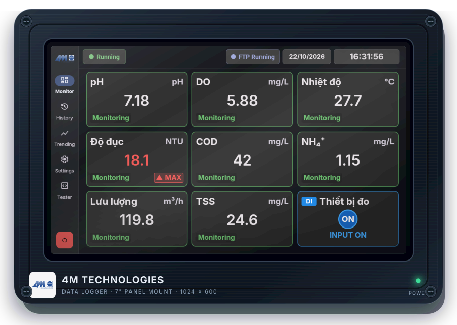
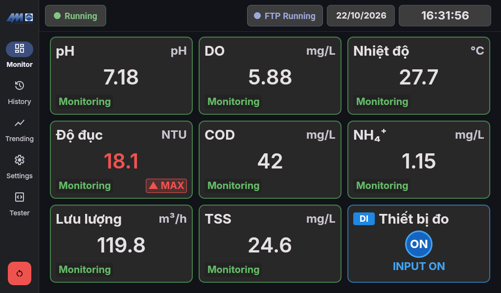
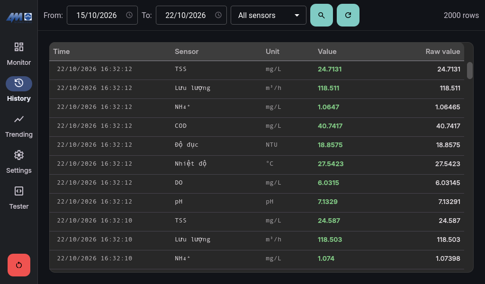
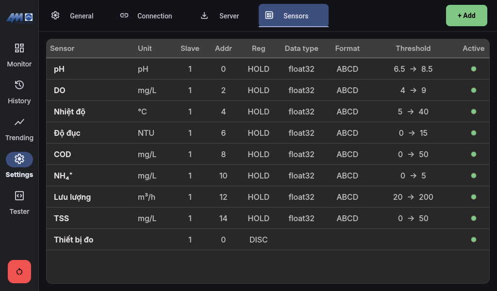

Thiết bị thu thập, lưu trữ và truyền dữ liệu quan trắc môi trường. Phiên bản màn hình cảm ứng 7 inch.

Hình vỏ thiết bị là minh họa; kích thước, vật liệu và đấu nối theo hồ sơ cấu hình bàn giao.
Mã tài liệu: 4M-DL-UM · Phiên bản: Rev. A · Ngày soạn: 23/10/2026
Đối tượng: nhân viên vận hành và kỹ thuật viên được phân công.
Trạng thái: bản dự thảo đối chiếu phần mềm, cần chạy thử trên thiết bị bàn giao.
Lưu ý trước sử dụng: bản phần mềm được đối chiếu hiện giữ dữ liệu 30 ngày, chưa đáp ứng yêu cầu ít nhất 60 ngày của Điều 39.1.c TT10. Các điểm cần nâng cấp/kiểm thử được nêu ở trang 19. Không dùng tài liệu này như chứng nhận tuân thủ.
4M TECHNOLOGIESHƯỚNG DẪN SỬ DỤNG · DATA LOGGER
4M-DL-UM · Rev. A 23/10/2026 · Bản dự thảo
Tra cứu nhanh
Mục lục & cách đọc
Chọn tên mục để đi đến trang tương ứng trong bản PDF/HTML hỗ trợ liên kết.
Quy ước:Chữ đậm là nhãn trên UI hoặc thao tác cần chọn. Nội dung tiếng Việt giải thích giao diện tiếng Anh. Ô vàng là cảnh báo; ô xanh là lưu ý/kết quả kiểm tra.
Ảnh minh họa UI chụp từ phần mềm với dữ liệu demo ngày 22/10/2026; một số bản cài có thể khác bố cục. Các trang không có ảnh dùng nhãn và hành vi đã đối chiếu mã nguồn, không phải ảnh UI mô phỏng.
4M TECHNOLOGIESHƯỚNG DẪN SỬ DỤNG · DATA LOGGER
4M-DL-UM · Rev. A 23/10/2026 · Bản dự thảo
01 · Trước khi vận hành
Tổng quan & chuẩn bị lắp đặt
4M Data Logger đọc cảm biến/analyser qua Modbus RTU RS-485, hiển thị tại trạm, ghi dữ liệu cục bộ và gửi báo cáo TXT qua FTP. Modbus TCP Server và REST API phục vụ tích hợp hệ thống tập trung.
Cảm biến / analyserModbus RTU · RS-485
4M Data LoggerĐo · lưu · hiển thị · báo cáo
Hệ thống tiếp nhậnFTP · Modbus TCP · REST
Hạng mục
Nội dung cần xác nhận
Thiết bị
Màn hình 7 inch, 1024 × 600; nền tảng Raspberry Pi/ARM64. Model phần cứng và phụ kiện theo hồ sơ bàn giao.
Nguồn & mặt tủ
Dùng đúng nguồn theo nhãn/bản vẽ được duyệt; không tự suy điện áp nguồn vào từ module xử lý. Không dùng kích thước hình minh họa để khoét tủ.
RS-485
Xác định A/B và dây tham chiếu theo tài liệu của bộ chuyển đổi và thiết bị đo; không tự đảo dây khi đang cấp điện.
Thông số truyền
Chuẩn bị slave ID, baudrate, parity, data bits, stop bits; register map của từng cảm biến.
Máy chủ
Nhận địa chỉ, tài khoản FTP, đường dẫn được phép ghi và cấu hình mạng từ đơn vị phụ trách.
Hồ sơ
Lưu bản cấu hình ban đầu và danh sách kênh đo, đơn vị, hệ số, ngưỡng đã được duyệt.
An toàn điện: Ngắt và cô lập nguồn trước đấu dây. Chỉ kỹ thuật viên có thẩm quyền được thao tác trong tủ; không nối trực tiếp tải công suất vào cổng tín hiệu nếu chưa có thiết kế giao tiếp phù hợp.
Phạm vi không được suy diễn
ANALOG trong ứng dụng là kênh giá trị số đọc qua Modbus, không mặc nhiên là đầu vào vật lý 4–20 mA. DI/DO là các kênh Modbus; số cổng, relay thực, cấp IP, công suất và điều kiện môi trường phải theo cấu hình phần cứng.
4M TECHNOLOGIESHƯỚNG DẪN SỬ DỤNG · DATA LOGGER
4M-DL-UM · Rev. A 23/10/2026 · Bản dự thảo
02 · Đưa thiết bị vào làm việc
Khởi động & thao tác cơ bản
2.1. Khởi động lần đầu
Kiểm tra nguồn, cáp RS-485 và mạng theo hồ sơ lắp đặt; bảo đảm thiết bị đo đã sẵn sàng.
Cấp nguồn. Với bản kiosk đã cài dịch vụ tự khởi động, chờ logo 4M và màn hình ứng dụng xuất hiện.
Kiểm tra ngày, giờ, múi giờ và danh sách cảm biến. Nếu báo No sensors, cấu hình kênh tại Settings → Sensors.
Với trạm chưa cấu hình: thực hiện lần lượt General (trang 8), Connection (trang 9), Sensors (trang 10–12), rồi Server (trang 13–14).
Trở về Monitor, đối chiếu giá trị với màn hình cảm biến/analyser và kiểm tra kết quả trong History.
Mục trên thanh bên
Công dụng
Monitor
Xem giá trị hiện tại, cảnh báo, trạng thái đo và FTP.
History
Tra cứu mẫu đã lưu theo ngày và cảm biến.
Trending
Xem biểu đồ trực tiếp hoặc truy vấn lịch sử.
Settings
Cấu hình General, Connection, Server và Sensors.
Tester
Kết nối kiểm tra Modbus, đọc/ghi thanh ghi; dành cho kỹ thuật viên.
2.2. Quy tắc thao tác cảm ứng
Chạm một lần để chọn. Vuốt để xem nội dung dài. Chạm ô nhập để dùng bàn phím ảo; nút OK trên bàn phím chỉ kết thúc nhập, không thay nút Save của biểu mẫu.
Lưu cấu hình: Sau sửa General/Connection/Server, chọn Save và phải thấy thông báo “Configuration saved.”. Nếu xuất hiện Validation error hoặc Failed to save configuration, chưa được coi là lưu thành công.
Phân biệt: Cancel của cấu hình tải lại giá trị đã lưu. Các thao tác xóa cảm biến, tạo lại token và gắn/gỡ DI/DO có thể lưu ngay; Cancel không phải nút hoàn tác chung.
4M TECHNOLOGIESHƯỚNG DẪN SỬ DỤNG · DATA LOGGER
4M-DL-UM · Rev. A 23/10/2026 · Bản dự thảo
03 · Giám sát tại trạm
Hiển thị số liệu — Monitor
Thanh bên → Monitor

Hình 1. Màn hình Monitor, bố cục Grid. Ảnh chụp UI thật, dữ liệu demo; không phải dữ liệu trạm đang vận hành.
3.1. Đọc thông tin trên màn hình
Vị trí / nhãn
Ý nghĩa và thao tác
Running / Pause
Chỉ báo hoạt động polling; không phải nút bật/tắt. Pause có thể xuất hiện khi cấu hình hoặc khi Tester đang dùng cổng serial.
Retrying / Error
Kết nối lỗi hoặc đang thử lại. Kiểm tra đường RS-485 và cấu hình theo trang 18; không xem giá trị cũ là mẫu mới.
Thẻ ANALOG
Tên/ký hiệu, đơn vị, giá trị hiện tại và trạng thái đo. Giá trị “---” không có nghĩa là bằng 0.
MAX / MIN
Cảnh báo vượt ngưỡng đã cài trên kênh. Đối chiếu thiết bị đo trước khi sửa ngưỡng.
Thẻ DI / DO
Trạng thái đầu vào/đầu ra số. ON/OFF phải được giải thích theo sơ đồ và ý nghĩa tín hiệu của trạm.
FTP
Off: lịch gửi không chạy; Running: đang chạy; OK/Failed: trạng thái upload. Running không bảo đảm đã gửi thành công.
Đổi Grid/List hoặc ẩn/hiện DI/DO tại Settings → General → Monitor layout / Show DI/DO sensors, sau đó Save. Màu xanh của một kênh không thay thế việc đánh giá chất lượng số liệu.
4M TECHNOLOGIESHƯỚNG DẪN SỬ DỤNG · DATA LOGGER
4M-DL-UM · Rev. A 23/10/2026 · Bản dự thảo
04 · Dữ liệu đã lưu
Tra cứu số liệu — History
Thanh bên → History

Hình 2. Màn hình History và bộ lọc ngày/cảm biến. Ảnh chụp UI thật, dữ liệu demo; không phải dữ liệu trạm đang vận hành.
Chọn From (ngày bắt đầu) và To (ngày kết thúc); ngày bắt đầu không được sau ngày kết thúc.
Chọn All sensors hoặc một cảm biến. Chạm biểu tượng kính lúp để tra cứu; chờ kết thúc Loading history… trước thao tác tiếp.
Đọc các cột Time, Sensor, Unit, Value, Raw value. Value là giá trị đã xử lý; Raw value là giá trị trước quy đổi.
Nếu không thấy mẫu cần tìm, thu hẹp khoảng ngày và chọn đúng cảm biến. Số rows là số dòng được nạp, không phải tổng dữ liệu toàn bộ trạm.
Giới hạn hiện tại: Mỗi truy vấn History lấy tối đa 2.000 mẫu. Bảng hiện tại không có cột trạng thái thiết bị và không có nút xuất CSV/USB; không suy các chức năng đó từ tài liệu OSG.
Làm mới: Bản hiện tại có thể tái sử dụng kết quả khi bộ lọc không đổi, kể cả bấm biểu tượng refresh. Đổi bộ lọc hợp lý rồi tìm lại nếu cần truy vấn khác; không liên tục bấm khi đang tải.
Định dạng ngày được chấp nhận: dd/MM/yyyy hoặc yyyy-MM-dd. Phạm vi tìm bao gồm đầu ngày From đến cuối ngày To; dữ liệu đã bị xóa theo chính sách lưu trữ sẽ không xuất hiện trở lại.
4M TECHNOLOGIESHƯỚNG DẪN SỬ DỤNG · DATA LOGGER
4M-DL-UM · Rev. A 23/10/2026 · Bản dự thảo
05 · Theo dõi xu hướng
Xem biểu đồ — Trending
Thanh bên → Trending → biểu tượng bộ lọc
Biểu đồ trực tiếp hiển thị cửa sổ gần nhất khoảng 5 phút của các kênh ANALOG đang hoạt động. Không nhầm dữ liệu live trong bộ đệm với toàn bộ lịch sử đã lưu trong cơ sở dữ liệu.
5.1. Lọc cảm biến và xem lịch sử
Mở Trending. Kiểm tra tên kênh và màu trên phần chú giải.
Chạm biểu tượng bộ lọc để mở Trending filter. Tại Show last, nhập số lượng từ 1 đến 365.
Chọn đơn vị Minutes, Hours hoặc Days. Ví dụ: 1 Days là khoảng 24 giờ gần nhất tính từ thời điểm truy vấn.
Chọn các kênh cần xem. All chọn tất cả; giao diện giữ ít nhất một kênh được chọn. Chọn ít kênh có thang giá trị tương đương để dễ đọc.
Chọn Apply, chờ truy vấn hoàn tất. Cancel đóng hộp thoại, không chạy truy vấn lịch sử mới.
Muốn quay về trực tiếp: chuyển sang màn hình khác rồi vào lại Trending. Bản hiện tại xóa chế độ lịch sử khi rời màn hình; không hướng dẫn dùng nút Live không có trên giao diện.
Hiện tượng
Cách hiểu
Đường bị nén sát trục
Các kênh dùng chung trục Y; lưu lượng hàng trăm có thể làm pH khó nhìn. Lọc nhóm kênh có thang gần nhau.
Chưa có đường live
Chờ tích lũy mẫu và kiểm tra Monitor có đang cập nhật hay không.
Khoảng lịch sử dài
Biểu đồ có giảm mẫu để hiển thị; không coi mỗi điểm biểu đồ là từng mẫu nguyên gốc.
Kết quả bị cắt ngắn
Truy vấn có trần số mẫu và có thể báo truncated; thu hẹp khoảng thời gian, đối chiếu dữ liệu gốc.
Không suy dung lượng lưu: Ô chọn đến 365 Days không chứng minh thiết bị lưu được 365 ngày. Chỉ truy vấn được dữ liệu thực sự còn trong cơ sở dữ liệu; xem trang 19.
4M TECHNOLOGIESHƯỚNG DẪN SỬ DỤNG · DATA LOGGER
4M-DL-UM · Rev. A 23/10/2026 · Bản dự thảo
06 · Cấu hình trạm
Cài đặt chung — General
Settings → General
Ghi lại cấu hình hiện tại trước khi sửa. Mã trạm trong General không tự thay thế các thành phần tên tệp báo cáo tại Server.
Trường trên màn hình
Hướng dẫn
Device ID
Thông tin nhận dạng thiết bị; dùng khi yêu cầu hỗ trợ. Không sửa nhận dạng bằng cách chép dữ liệu từ thiết bị khác.
Station code
Nhập mã trạm theo cấu hình được duyệt. Đồng bộ với hồ sơ hệ thống tập trung.
Name Device
Tên hiển thị/nhận diện thiết bị theo trạm.
Poll interval (s)
Chu kỳ polling, từ 1 đến 3.600 giây. Chọn theo yêu cầu vận hành và khả năng đáp ứng của đường RS-485.
Monitor layout
Grid: dạng thẻ; List: dạng bảng. Chọn theo nhu cầu theo dõi.
Show DI/DO sensors
Ẩn/hiện DI/DO trên Monitor; không phải công tắc tháo dây hoặc vô hiệu hóa tải vật lý.
Time format / Date format
Định dạng hiển thị giờ/ngày; khuyến nghị giờ 24h HH:mm:ss và ngày dd/MM/yyyy.
Timezone
Chọn múi giờ tương ứng UTC+7 cho Việt Nam. Sau Save, kiểm tra đồng hồ thực tế trên Monitor.
Điền các thông tin được phép thay đổi; chọn Save.
Kiểm tra thông báo thành công. Nếu báo không áp dụng được timezone cho OS, báo kỹ thuật viên; lưu cấu hình không có nghĩa là giờ hệ điều hành đã đúng.
Đối chiếu đồng hồ với nguồn thời gian tin cậy. NTP phụ thuộc hệ điều hành, quyền và kết nối mạng.
Lưu ý thời gian: Không chỉnh giờ tùy tiện khi đang lấy dữ liệu chính thức. Sai giờ có thể làm mẫu, biểu đồ, khoảng báo cáo và tên tệp không khớp. Định dạng giờ trên UI không làm thay đổi quy tắc timestamp TXT.
4M TECHNOLOGIESHƯỚNG DẪN SỬ DỤNG · DATA LOGGER
4M-DL-UM · Rev. A 23/10/2026 · Bản dự thảo
07 · Modbus RTU
Cài đặt kết nối cảm biến
Settings → Connection → Local Sensors
7.1. Chuẩn bị
Tất cả thiết bị trên cùng bus phải có cấu hình truyền tương thích và slave ID không xung đột. Dùng register map của đúng model/firmware cảm biến; không sao chép địa chỉ từ ví dụ demo.
Trường
Ý nghĩa
Port
Chọn cổng serial đã được nhận diện, ví dụ /dev/ttyUSB0 (chỉ là ví dụ). Biểu tượng refresh quét lại danh sách cổng.
Số bit dữ liệu theo thiết bị đo; thường là 8 nhưng phải xác minh trên cấu hình thực tế.
Parity
N: không parity; E: chẵn; O: lẻ. Phải trùng với thiết bị đo.
Stop bits
Chọn 1 hoặc 2 theo cảm biến.
Chọn Port. Nếu không thấy cổng, kiểm tra bộ chuyển đổi và chạm refresh; không tự rút cáp của trạm đang đo nếu chưa được phép.
Điền Baudrate và Data framing đúng tài liệu thiết bị. Chọn Save và chờ thông báo.
Về Monitor, chờ kết nối ổn định. Nếu tất cả kênh đều lỗi, kiểm tra cấu hình serial trước khi sửa từng cảm biến.
Nếu chỉ một kênh lỗi, kiểm tra slave ID, địa chỉ, register type và data type của kênh đó (trang 10).
Không đổi cấu hình tùy tiện: Thay port/baudrate có thể tạm gián đoạn toàn bộ bus. Không chạy thêm một phần mềm master khác vào cùng cổng hoặc cùng bus khi 4M đang polling.
7.2. Không thấy cổng serial
Báo kỹ thuật viên kiểm tra nguồn thiết bị chuyển đổi, đầu nối, driver và quyền dialout của dịch vụ. Cổng được lưu trong cấu hình có thể vẫn hiện dù bộ chuyển đổi đã bị tháo; thấy tên cổng không chứng minh cổng đang sử dụng được.
4M TECHNOLOGIESHƯỚNG DẪN SỬ DỤNG · DATA LOGGER
4M-DL-UM · Rev. A 23/10/2026 · Bản dự thảo
08 · Danh sách kênh đo
Thêm, sửa và xóa cảm biến
Settings → Sensors

Hình 3. Danh sách cảm biến và nút + Add. Ảnh chụp UI thật, dữ liệu demo; không phải dữ liệu trạm đang vận hành.
Chọn + Add để thêm kênh; hoặc chạm một dòng rồi chọn biểu tượng bút chì để sửa. Không cần double-click.
Tại Basic & Modbus, bật Active khi muốn kênh tham gia đo; điền Name, Sensor symbol, Unit cho ANALOG.
Nhập Slave ID (1–247), Address (0–65535) và Register type đúng tài liệu thiết bị.
Chọn Input Registers / Holding Registers cho ANALOG; Discrete Inputs cho DI; Coils cho DO. Không để Invalid.
Với ANALOG, chọn Data type và Endian format; sang Scaling & Alarms nếu cần. Chọn Save rồi kiểm tra trên Monitor.
Địa chỉ Modbus: Address là địa chỉ truy vấn. Nếu hãng ghi số tham chiếu kiểu 30001/40001 hoặc đánh số từ 1, kỹ thuật viên phải xác định cách quy đổi đúng; không nhập nguyên số tham chiếu theo phỏng đoán.
Xóa không thể coi là ẩn kênh: Chọn dòng → thùng rác → xác nhận sẽ xóa cảm biến và dữ liệu sensor_data liên quan trong bản hiện tại. Sao lưu được kiểm chứng trước thao tác; dùng Active để ngừng dùng kênh nếu muốn giữ cấu hình thay vì xóa.
Trước quy đổi, kiểm tra Data type tại Basic & Modbus: int16/uint16 dùng 1 thanh ghi; int32/uint32/float32 dùng 2 thanh ghi. int là có dấu, uint là không dấu. Endian format AB/BA áp dụng 16 bit; ABCD/CDAB/BADC/DCBA áp dụng 32 bit, chọn theo register map của hãng.
Trường / chế độ
Cách thiết lập
No scaling (raw value)
Giữ nguyên giá trị đã giải mã từ thanh ghi; dùng khi cảm biến đã trả đơn vị kỹ thuật.
Linear (y = ax + b)
Nhập a và b; y là kết quả quy đổi, x là raw value. Ví dụ x = 718, a = 0.01, b = 0 thì y = 7.18.
Two-point mapping
Khai báo RawMin/RawMax và ScaleMin/ScaleMax. Hai giá trị Raw không được bằng nhau; kiểm tra cả hai đầu dải và điểm giữa.
Advanced (JSON)
Chỉ kỹ thuật viên sử dụng cấu hình đã được kiểm thử; không nhập công thức hoặc JSON đoán từ tài liệu khác.
Decimal places
0–6 chữ số thập phân theo nhu cầu hiển thị/báo cáo. Không làm tăng độ chính xác của cảm biến.
Min threshold / Max threshold
Ngưỡng cảnh báo theo giá trị đã xử lý. Để trống là tắt ngưỡng tương ứng; không nhập 0 để thay cho “tắt”.
9.1. Trình tự kiểm tra
Đọc và ghi lại raw value, giá trị trên thiết bị đo và đơn vị chuẩn.
Chọn chế độ quy đổi phù hợp, không quy đổi lần thứ hai nếu analyzer đã trả giá trị thật.
Đặt ngưỡng theo hồ sơ vận hành đã duyệt; chọn Save.
Đối chiếu Value và Raw value trong History, kiểm tra các điểm thử nằm trong và ngoài ngưỡng trên môi trường an toàn.
Nếu có liên kết DO, kiểm tra kết quả tác động theo quy trình trang 12; ghi nhận và khôi phục trạng thái làm việc.
Ví dụ không phải hiệu chuẩn: Các con số trên chỉ giải thích phép quy đổi. Không dùng hệ số/ngưỡng demo để vận hành chính thức; thay đổi a/b có thể làm biến đổi dữ liệu và cảnh báo.
Phân biệt cảnh báo: MAX/MIN là ngưỡng do trạm cấu hình; không tự đồng nghĩa vượt quy chuẩn pháp lý. Giá trị bất thường cần kiểm tra cảm biến và công tác QA/QC.
4M TECHNOLOGIESHƯỚNG DẪN SỬ DỤNG · DATA LOGGER
4M-DL-UM · Rev. A 23/10/2026 · Bản dự thảo
10 · Trạng thái & đầu ra cảnh báo
Liên kết DI/DO với kênh đo
Settings → Sensors → sửa kênh ANALOG đã lưu → Digital I/O
Tab Digital I/O xuất hiện khi sửa một kênh ANALOG đã tồn tại, không xuất hiện trong bước thêm mới. Cần tạo các kênh Discrete Inputs/Coils trước khi liên kết.
10.1. Gắn trạng thái DI
Tạo kênh DI tại Sensors với Register type = Discrete Inputs và địa chỉ đúng.
Mở Digital I/O của kênh ANALOG, chọn thẻ DI và chọn DI sensor.
Chọn Status code phù hợp với ý nghĩa tín hiệu, rồi Attach DI.
Kiểm tra Attached sensors. Chọn liên kết để sửa mã bằng Update, hoặc Detach để gỡ.
10.2. Gắn cảnh báo DO
Tạo kênh DO với Register type = Coils.
Trong Digital I/O, chọn DO, chọn DO sensor còn khả dụng.
Đánh dấu Trigger on Max và/hoặc Trigger on Min, chọn Attach DO.
Kiểm tra liên kết và thử tác động an toàn; một DO đã gắn kênh khác có thể không nằm trong danh sách chọn.
Mã hiển thị
Trạng thái
00 — Monitoring
Đang đo.
01 — Calibrating
Hiệu chuẩn.
02 — Error
Báo lỗi thiết bị.
03 — Maintenance
Bảo trì nội bộ; không có trong Bảng 35 TT10. Chưa mặc nhiên được phép truyền như mã TT10.
Tác động trực tiếp: Attach DI/DO, Update và Detach gọi thay đổi liên kết ngay. Đóng biểu mẫu hoặc Cancel không bảo đảm hoàn tác những thay đổi này.
An toàn đầu ra: Không thử DO/ghi coil vào thiết bị thật khi tải còn có thể tác động nguy hiểm. Việc ghép tín hiệu, cực tính, relay trung gian và trạng thái mất nguồn phải được kiểm tra theo thiết kế tủ.
4M TECHNOLOGIESHƯỚNG DẪN SỬ DỤNG · DATA LOGGER
4M-DL-UM · Rev. A 23/10/2026 · Bản dự thảo
11 · Server / General Settings
Cấu hình truyền báo cáo FTP
Settings → Server → General Settings
Trường
Hướng dẫn
Active
Bật lịch tạo/gửi báo cáo khi cấu hình máy chủ và danh sách kênh đã kiểm tra.
Server name
Tên nhận diện cấu hình máy chủ.
Send interval (min)
Chọn 1, 2, 3, 5, 10, 15, 20, 30 hoặc 60 phút. Với yêu cầu TT10, cấu hình ≤ 5 phút và kiểm thử độ trễ thực tế.
Start time
Giờ neo lịch dạng HH:mm, ví dụ 00:00; theo phương án trạm.
Host / Port
Địa chỉ và cổng máy chủ FTP được cấp, cổng mặc định 21. Không nhầm với cổng REST 8080 hoặc Modbus TCP 5020.
Username / Password
Thông tin do đơn vị tiếp nhận cấp; nhập kín, không chụp vào biên bản công khai.
Station folder / Date subfolder
Thư mục trạm và phân cấp ngày; mẫu thường dùng NUO001 và yyyy/MM/dd.
File prefix / File suffix
Phần đầu tên tệp và mẫu thời gian; thiết lập chi tiết tại trang 14.
Remote path
Bản xem trước tên tệp/đường dẫn đích; không chứng minh máy chủ cho phép ghi hoặc tệp đã được gửi.
Nhập thông tin theo tài khoản FTP và thư mục được cấp. Đối chiếu các giá trị, nhất là Host/Port và dấu gạch dưới trong tên tệp.
Chọn kênh tại Transfer Parameters (trang 14), bật Active và chọn Save.
Trở về Monitor, theo dõi FTP. Xác nhận với phía tiếp nhận rằng đúng tệp, đúng giờ, đủ thông số đã tới máy chủ.
Khi báo FTP Failed, ghi thời điểm và thông báo lỗi; kiểm tra mạng/tài khoản/quyền thư mục. Không đổi sang SFTP bằng cách chỉ đổi Port.
Phương thức truyền: Bản hiện tại dùng FTP thường, không phải FTPS/SFTP. Điều 39 nêu FTP hoặc FTPs hoặc sFTP; khả năng bảo mật mạng và yêu cầu của bên nhận phải được xem xét riêng.
4M TECHNOLOGIESHƯỚNG DẪN SỬ DỤNG · DATA LOGGER
4M-DL-UM · Rev. A 23/10/2026 · Bản dự thảo
12 · Nội dung báo cáo
Chọn thông số truyền & tên tệp
Settings → Server → Transfer Parameters
Kiểm tra danh sách các kênh ANALOG. Chọn Sensor symbol đúng thông số; không dùng tên tự do thay cho mã được bên nhận yêu cầu.
Đánh dấu Transmit cho kênh cần gửi; Select all / Deselect all thay đổi toàn bộ ô chọn.
Chọn Save trên thanh chung để lưu. Auto-add new sensors áp dụng chính sách cho kênh mới; luôn kiểm lại danh sách trước bàn giao.
Chỉ các kênh ANALOG active, có bật truyền mới được đưa vào báo cáo; kênh bị loại có thể vẫn xem trên Monitor.
Nút Delete tại Transfer Parameters: Bản hiện tại tắt truyền ngay cho các dòng đang được đánh dấu Transmit; không phải xóa cảm biến khỏi Sensors. Không dùng nút này như thao tác chọn dòng thông thường.
12.1. Ví dụ cấu hình tên tệp theo Phụ lục 15
Trường
Ví dụ minh họa
File prefix
HN_ABCD_NUO001_ — có dấu gạch dưới cuối.
File suffix
yyyyMMddHHmmss — giờ 24h theo mẫu Qt.
Station folder
NUO001
Date subfolder
yyyy/MM/dd
Tên tệp kết quả
HN_ABCD_NUO001_20261023120000.txt
Các mã trên là ví dụ, không phải cấu hình của trạm thật. Phụ lục 15 quy định mã tỉnh, cơ sở 4 ký tự, trạm 6 ký tự (NUO/KHI và 3 ký tự tên trạm); xác nhận với đơn vị tiếp nhận trước sử dụng.
Giới hạn cần xử lý trước nghiệm thu: Bộ ghi TXT hiện cần sửa/kiểm thử cách xuống dòng từng thông số và mã 03. Việc đặt tên đúng và FTP OK chưa chứng minh toàn bộ tệp đáp ứng Phụ lục 15; xem trang 19.
4M TECHNOLOGIESHƯỚNG DẪN SỬ DỤNG · DATA LOGGER
4M-DL-UM · Rev. A 23/10/2026 · Bản dự thảo
13 · Network Services & QR
Kết nối SCADA / Central Logger
Settings → Connection → Network Services
13.1. Modbus TCP Server
Bật Active trong Modbus TCP Server; nhập Bind address, Port (mặc định 5020) và Unit ID theo cấu hình tích hợp.
Chọn Save. Kiểm tra trạng thái Listening; nếu Error, đọc thông báo ngay bên dưới và báo kỹ thuật viên.
Trên SCADA/Central, dùng IP thực tế của logger, port và register map v1 được cấp. 0.0.0.0 là địa chỉ bind mọi giao diện, không phải địa chỉ client dùng để kết nối.
13.2. HTTP REST Server và ghép nối QR
Bật Active, kiểm tra Bind address và Port (mặc định 8080); chọn Save để dịch vụ lắng nghe và tạo token khi chưa có.
Chạm biểu tượng QR cạnh API token khi REST đã hoạt động. Trong Central Logger, dùng Add Logger → Scan QR.
Kiểm tra Central kết nối đúng IP LAN và tên trạm. Không gửi ảnh QR/token qua kênh không được phép.
Chỉ dùng Regenerate khi được phê duyệt: thao tác đổi token được lưu ngay, có xác nhận. Sau đổi phải ghép nối/cập nhật token cho các client liên quan.
Dịch vụ
Điểm cần nhớ
REST /api/v1/readings
Cần Bearer token; đọc snapshot hiện tại.
REST /api/v1/config
Đọc cấu hình có token; POST chỉ cập nhật app-config, không sửa trường cảm biến.
REST /api/v1/health
Không cần token; không dùng khả năng gọi health để kết luận token đúng.
Bảo mật: Modbus TCP không có Bearer token; HTTP/FTP không mặc nhiên mã hóa. Chỉ triển khai trong mạng được kiểm soát, không tự mở các cổng ra Internet. QR chứa bí mật truy cập; không đưa vào tài liệu công khai.
4M TECHNOLOGIESHƯỚNG DẪN SỬ DỤNG · DATA LOGGER
4M-DL-UM · Rev. A 23/10/2026 · Bản dự thảo
14 · Chỉ dành cho kỹ thuật viên
Kiểm tra Modbus — Tester
Thanh bên → Tester
Gây gián đoạn đo: Connect tạm dừng polling khi Monitor đang chạy hoặc thử kết nối lại, để Tester giữ cổng serial. Phải Disconnect khi xong; không chỉ đổi màn hình rồi bỏ quên kết nối.
14.1. Đọc thử một vùng nhỏ
Xác nhận được phép thử; kiểm tra thông số Serial đang lấy từ Settings → Connection. Chọn Connect, chờ kết nối xong.
Chọn Read, Slave ID, Register type, Data type và Endian format đúng register map.
Đặt Start address, End address và Registers per read vừa đủ. Bắt đầu với vùng nhỏ được phép đọc; Scan range là quét dải địa chỉ trên slave đã chọn, không tự tìm mọi slave ID.
Chọn Scan range; bảng hiển thị Address và Value. Dùng Stop scan để dừng; Hide 0 chỉ ẩn giá trị 0, không xóa hay bỏ qua dữ liệu gốc.
Nếu cần tạo kênh, chọn Save new sensor, kiểm tra lại toàn bộ biểu mẫu Settings rồi Save. Các trường được chuyển theo cấu hình quét, không tự suy địa chỉ từ dòng kết quả.
Chọn Disconnect, về Monitor và xác nhận Running cùng giá trị mới. Clear table chỉ xóa bảng kết quả Tester, không xóa lịch sử đo.
14.2. Ghi thử — thao tác có rủi ro
Write chỉ dành cho Holding Registers/Coils và địa chỉ được hãng cho phép. Điền Write address/Write value và kiểm tra loại dữ liệu. Bản hiện tại gửi lệnh khi bấm nút Write thực thi; không dựa vào giả định sẽ có hộp thoại xác nhận thứ hai.
Không ghi khi chưa có phương án an toàn: Lệnh có thể tác động thiết bị/relay ngay. Không thử trên thanh ghi cấu hình, hiệu chuẩn hoặc điều khiển tải khi chưa có hướng dẫn của hãng và người có thẩm quyền. Sau ghi phải đọc lại, kiểm tra trạng thái thật và khôi phục theo kế hoạch.
4M TECHNOLOGIESHƯỚNG DẪN SỬ DỤNG · DATA LOGGER
4M-DL-UM · Rev. A 23/10/2026 · Bản dự thảo
15 · Quy trình tại trạm
Vận hành hằng ngày & khởi động lại
15.1. Kiểm tra đầu ca
Ngày/giờ đúng, múi giờ UTC+7; ứng dụng không bị che bởi hộp thoại hay màn hình lỗi.
Monitor có đúng danh sách kênh, không bị bỏ Active hoặc nhầm đơn vị.
Running và giá trị mới tiếp tục cập nhật; không chỉ nhìn một ảnh chụp tĩnh.
Đối chiếu cảnh báo MAX/MIN, trạng thái hiệu chuẩn/lỗi/bảo trì với tình trạng thật.
Kiểm tra FTP và xác nhận tệp trên máy chủ theo trách nhiệm được giao.
Tra cứu History một khoảng gần nhất; không còn kết nối Tester đang giữ cổng.
15.2. Khi cần khởi động lại
Báo người phụ trách, ghi nhận thời gian và lý do. Lưu các cấu hình đang sửa và dừng công việc Tester an toàn.
Chạm nút khởi động lại màu đỏ ở cuối thanh bên; đọc hộp thoại Confirm reboot.
Chỉ chọn Reboot khi đã được phép. Đây là khởi động lại cả thiết bị, không phải chỉ làm mới bảng.
Chờ hệ thống boot và ứng dụng tự mở theo cấu hình kiosk; kiểm tra giờ, polling, dữ liệu mới và FTP sau khởi động.
Không dùng reboot thay tắt nguồn: UI hiện không có quy trình shutdown được mô tả trong tài liệu này. Khi bảo trì cần cắt nguồn, để kỹ thuật viên tắt hệ điều hành theo quy trình bàn giao rồi mới cô lập nguồn; không bấm Reboot rồi rút nguồn giữa lúc boot.
15.3. Mất điện / mất mạng
Khi có điện trở lại, kiểm tra hệ thống và đối chiếu khoảng trống dữ liệu. Khi mạng phục hồi, xác nhận tệp thực sự được truyền bù, không chỉ nhìn FTP Running. Ghi nhật ký sự cố và thông báo theo quy trình trạm; không tự tạo dữ liệu lấp khoảng trống.
4M TECHNOLOGIESHƯỚNG DẪN SỬ DỤNG · DATA LOGGER
4M-DL-UM · Rev. A 23/10/2026 · Bản dự thảo
16 · Chẩn đoán an toàn
Tra cứu sự cố thường gặp
Hiện tượng
Kiểm tra / xử lý theo thứ tự
Màn hình không lên
Kiểm tra nguồn và màn hình theo hồ sơ; không cấp thử điện áp khác. Nếu có điện mà ứng dụng không mở, báo kỹ thuật viên kiểm tra dịch vụ kiosk.
No sensors
Sensors có ít nhất một kênh Active? Cấu hình đã Save? Không xóa/tạo lại hàng loạt để thử.
Retrying / Error mọi kênh
Kiểm tra nguồn thiết bị đo, bus A/B, cổng serial, baudrate/framing và Tester có đang Connect. Một bus chỉ có master theo thiết kế.
Một kênh không đọc được
Kiểm tra slave ID, Address, loại thanh ghi, số thanh ghi theo kiểu dữ liệu; đối chiếu register map của đúng firmware.
Giá trị sai rất lớn / âm
Kiểm tra int/uint/float, 16/32 bit, Endian format và hệ số quy đổi. Không sửa ngưỡng chỉ để tắt cảnh báo.
Không có dữ liệu History
Kiểm tra ngày, bộ lọc và quá trình polling/ghi DB. Dữ liệu quá hạn hoặc bị xóa không lấy lại bằng cách đổi ngày tìm.
History không thấy mẫu mới
Có thể dùng kết quả cache của bộ lọc cũ; xem trang 6. Không hiểu 2.000 rows là toàn bộ cơ sở dữ liệu.
Biểu đồ trống / bị nén
Kiểm tra dữ liệu Monitor, khoảng tìm, kênh được chọn và trục dùng chung; thử ít kênh cùng thang đo.
FTP Failed
Kiểm tra mạng, Host/Port, tài khoản, quyền tạo thư mục và danh sách Transmit. Xác nhận lỗi phía máy chủ; không đưa mật khẩu vào ảnh báo lỗi.
TCP/REST Error
Kiểm tra bind IP có tồn tại, port có bị chiếm/quyền hạn và dịch vụ đã Save. Dùng IP LAN thật từ client, không dùng 0.0.0.0.
Central mất kết nối sau đổi token
Cập nhật token/scan QR lại trên các client được phép. Không tái sử dụng QR cũ.
Lưu cấu hình báo lỗi
Đọc Validation error hoặc Failed to save configuration; giữ lại nội dung lỗi. Kiểm tra lại các trường thay vì cho rằng nút Save đã thành công.
Dừng thao tác và báo kỹ thuật: Cảnh báo thiếu dung lượng, lỗi cơ sở dữ liệu, sai giờ hệ thống, khóa thiết bị hoặc đầu ra DO bất thường. Không tự xóa DB/log để “chữa nhanh”, không tháo thẻ nhớ khi đang chạy.
4M TECHNOLOGIESHƯỚNG DẪN SỬ DỤNG · DATA LOGGER
4M-DL-UM · Rev. A 23/10/2026 · Bản dự thảo
17 · Phạm vi phiên bản được hướng dẫn
Lưu trữ & lưu ý TT10
Hướng dẫn này mô tả hành vi phần mềm đang đối chiếu, không thay hồ sơ nghiệm thu. Không thể làm thiết bị tuân thủ TT10 chỉ bằng chọn một mẫu tên tệp.
Yêu cầu / điểm kiểm tra
Hiện trạng và việc cần làm
Lưu dữ liệu ≥ 60 ngày
Điều 39.1.c yêu cầu ít nhất 60 ngày gần nhất, đủ thông số, kết quả, đơn vị, thời gian và trạng thái. Mã hiện giữ sensor_data/báo cáo đã gửi 30 ngày; cần nâng cấp, kiểm thử dung lượng và lịch xóa trước nghiệm thu.
Cấu trúc TXT
Phụ lục 15: mỗi thông số một dòng, 5 trường phân cách TAB, thời gian đúng mẫu. Bộ ghi hiện gom các nhóm vào một dòng; cần sửa/kiểm thử, không chỉ đổi tên tệp.
Mã trạng thái
Bảng 35: 00 đang đo, 01 hiệu chuẩn, 02 lỗi. 03 Maintenance là mã nội bộ đang cần quy tắc xử lý được duyệt trước truyền.
Truyền trong 05 phút
Điều 39.2.b yêu cầu chậm nhất 05 phút sau khi có kết quả. Cấu hình chu kỳ ≤ 5 phút chưa thay thử nghiệm độ trễ thực tế.
GMT+7 & truyền bù
Xác minh đồng hồ thật và thử mất mạng/khôi phục; chưa khẳng định truyền bù end-to-end đã đạt.
Truy cập & cổng
Tài khoản/mật khẩu, quyền quản lý và niêm phong cổng cần được tổ chức theo cấu hình hệ thống/cơ quan quản lý; token REST không thay toàn bộ yêu cầu này.
Camera / lấy mẫu
Thuộc cấu hình hệ thống riêng (nếu có); không suy khả năng từ chức năng DO. Tài liệu này không hướng dẫn RTSP hay điều khiển bộ lấy mẫu chưa được tích hợp/nghiệm thu.
17.1. Bảo vệ dữ liệu
Chính sách hiện tại giữ log hệ thống 14 ngày, độc lập với dữ liệu quan trắc. Nhờ kỹ thuật viên thực hiện sao lưu trước sửa cấu hình/xóa kênh và trước khi dữ liệu hết hạn. SQLite WAL cần sao lưu nhất quán: không chỉ chép một tệp .db đang ghi rồi coi là đầy đủ; dùng công cụ backup phù hợp hoặc quy trình dừng an toàn được duyệt.
Không thể khôi phục bằng tăng ngưỡng: Dữ liệu đã bị xóa sau 30 ngày hoặc khi xóa cảm biến không tự quay lại khi nâng ngưỡng lên 60 ngày. Cần kế hoạch bảo toàn dữ liệu trước triển khai nâng cấp.
Nguồn đối chiếu: bản Thông tư 10/2021/TT-BTNMT người dùng cung cấp, Điều 39 và Phụ lục 15; không phải kết luận pháp lý về mọi văn bản sửa đổi sau đó. Chi tiết nội bộ: docs/catalogue/TT10-REVIEW.md.
4M TECHNOLOGIESHƯỚNG DẪN SỬ DỤNG · DATA LOGGER
4M-DL-UM · Rev. A 23/10/2026 · Bản dự thảo
18 · Biểu mẫu vận hành
Kiểm tra bàn giao & yêu cầu hỗ trợ
Đánh dấu sau khi kiểm tra trên thiết bị thực, không đánh dấu chỉ dựa trên ảnh demo trong tài liệu.
Nguồn, đấu dây và gá lắp đúng bản vẽ; nhãn cổng và hồ sơ thiết bị đầy đủ.
Ghi nhận Device ID, mã trạm, phiên bản phần mềm và bản cấu hình đã sao lưu.
Thử từng kênh: slave ID, địa chỉ, kiểu dữ liệu, quy đổi, đơn vị và giá trị đối chiếu.
Thử ngưỡng min/max và DI/DO theo phương án an toàn, sau đó khôi phục đúng chế độ.
Giờ GMT+7 đúng; History và Trending có dữ liệu trong khoảng thử.
FTP được bên nhận xác nhận; tên tệp/nội dung/chu kỳ và truyền bù đã được kiểm thử.
Nếu áp dụng TT10: nâng cấp và kiểm chứng lưu ≥ 60 ngày, cấu trúc TXT/trạng thái và các yêu cầu liên quan ở trang 19.
Tester đã Disconnect; Monitor cập nhật trở lại sau thử và sau reboot.
Bảo vệ token/QR/tài khoản; phân công người giữ bản sao lưu và nhật ký sự cố.
18.1. Ghi nhận tại trạm
Tên trạm:
Device ID:
Phiên bản phần mềm: Ngày kiểm tra:
Người kiểm tra: Người tiếp nhận:
18.2. Khi yêu cầu hỗ trợ 4M
Cung cấp thời điểm lỗi và múi giờ, Device ID, màn hình đang dùng, cấu hình liên quan không chứa bí mật, hiện tượng trên cảm biến thật và thao tác ngay trước sự cố. Gửi log qua kênh được phê duyệt; che token, QR, mật khẩu và thông tin mạng nhạy cảm trước chia sẻ.
Nguyên tắc vận hành: chỉ thay đổi trong phạm vi được phân quyền, ghi nhận trước/sau sửa, kiểm chứng dữ liệu thực và báo cáo khi có khoảng trống. Không bịa số liệu hoặc tắt cảnh báo để che sự cố.
4M Technologies · Thông tin liên hệ và quy trình hỗ trợ theo hồ sơ bàn giao của dự án.